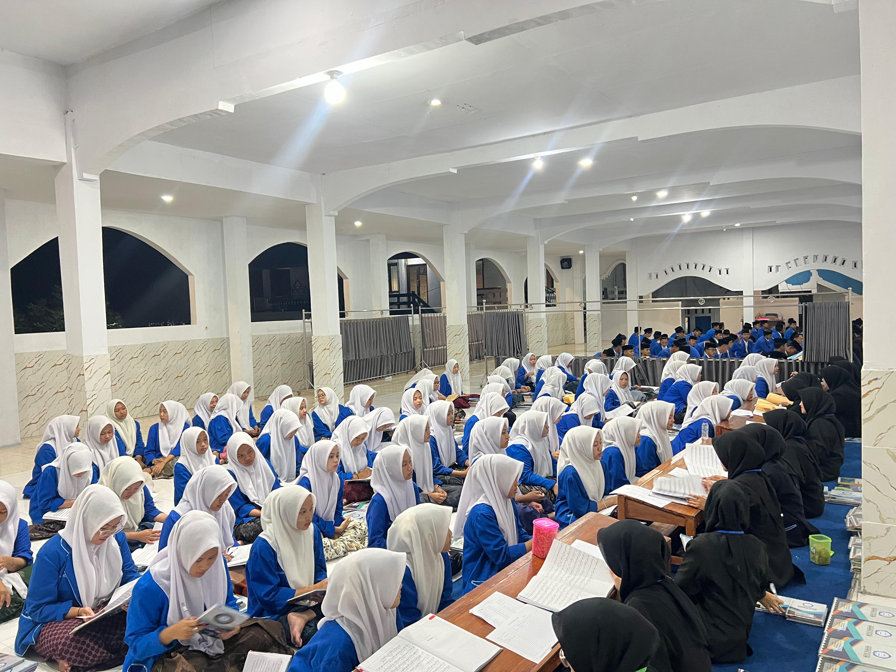
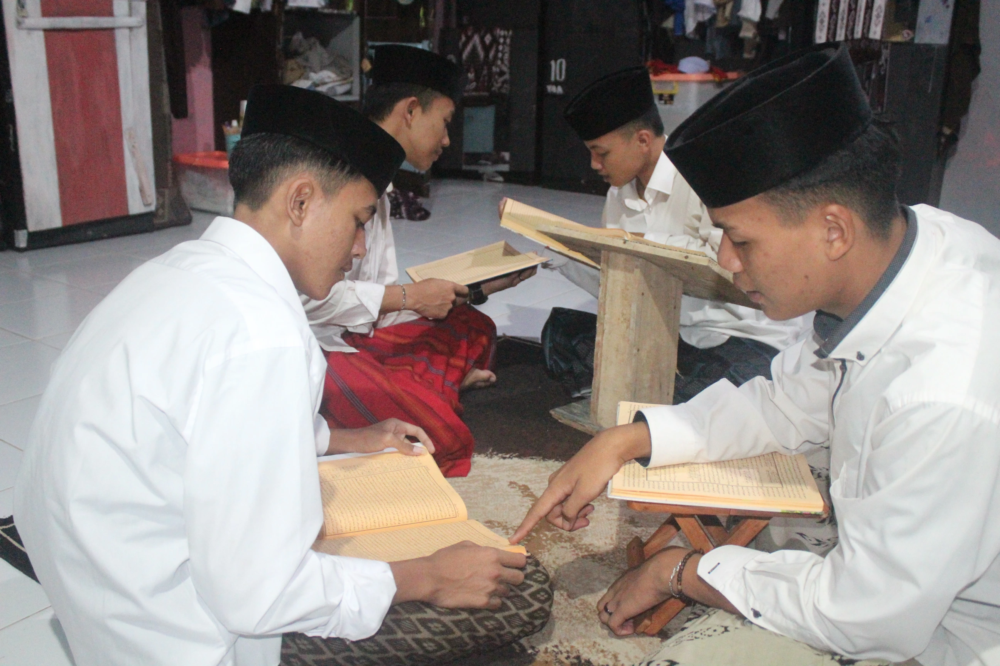
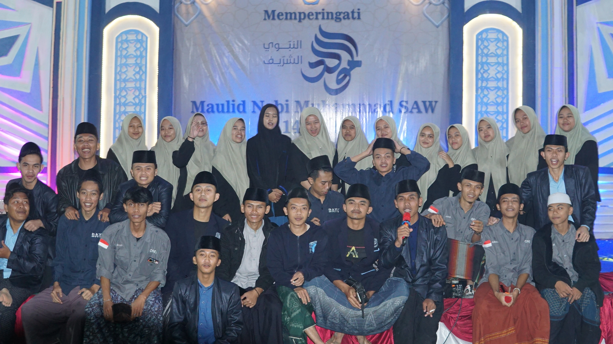
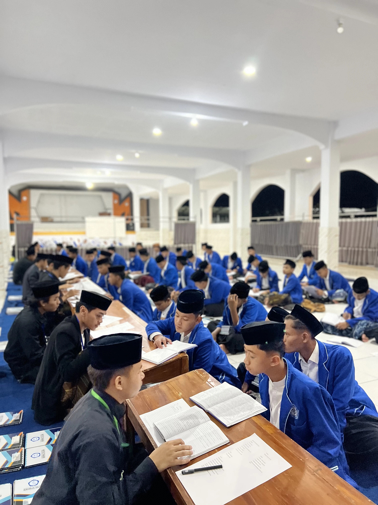
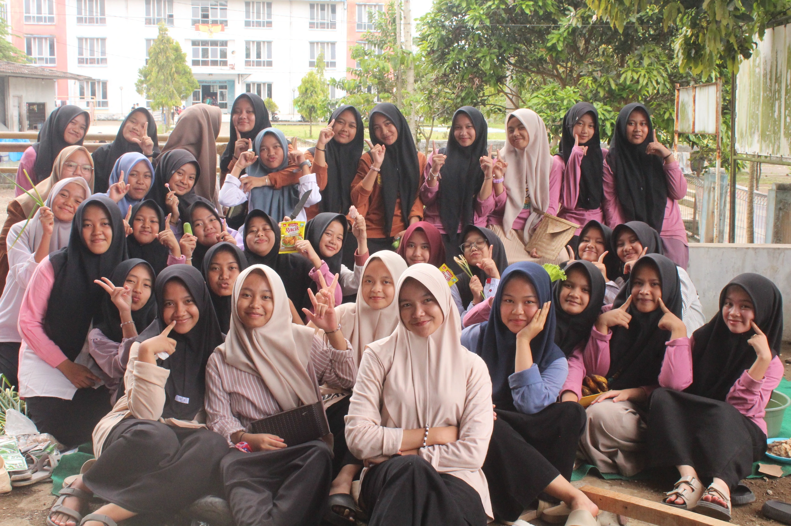

Pendidikan Salafiyah
Penguasaan Kitab Kuning/Gundul (Fiqh, Aqidah, Tasawuf, Shorof), Tahfidzul Qur'an 30 Juz, serta Pembiasaan Bahasa Arab & Inggris.
Mewujudkan generasi ulul albab yang beradab, ilmiyah amaliyah & amaliyah ilmiyah berlandaskan Al-Qur'an dan Al-Hadits.

Berada di bawah naungan Yayasan An-Nuur Bahrul Ulum Singaparna, pesantren ini menerapkan asas Islam dalam pembelajaran dan kehidupan sehari-hari dengan memprioritaskan penguasaan kajian salafiyah, teknologi, serta kecakapan hidup (life skill).
Visi Kami: Terwujudnya insan yang memiliki keseimbangan spiritual dan moral menuju generasi ulul albab yang berkomitmen tinggi terhadap kemaslahatan umat, beradab, ilmiyah amaliyah, amaliyah ilmiyah.
Hubungi Kontak Resmi →Fasilitas pendidikan terpadu terakreditasi di bawah Yayasan An-Nuur Bahrul Ulum.
Penguasaan Kitab Kuning/Gundul (Fiqh, Aqidah, Tasawuf, Shorof), Tahfidzul Qur'an 30 Juz, serta Pembiasaan Bahasa Arab & Inggris.
1. TK Bahrul Ulum
2. SMP Plus An-Nuur
3. SMA Plus An-Nuur
4. SMK Plus An-Nuur.
Layanan KBIH + Umrah, Pengajian Kitab Umum, Ekstrakurikuler (Hadroh, Marawis, Pencak Silat, Kaligrafi), serta Ziarah Qubur Akbar.
Memuat berita terbaru...
Dokumentasi visual kegiatan dan kehidupan harian santri Bahrul Ulum




MOMEN KEBERSAMAANJl. KH. Zaenal Musthafa, Kp. Nagasari, RT. 009 RW. 002, Desa Sukarapih, Kec. Sukarame, Kab. Tasikmalaya, Prov. Jawa Barat (Kode Pos 46461).